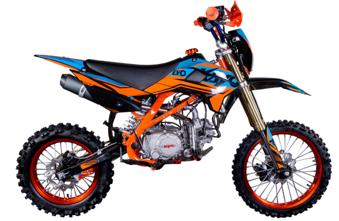

EVOLUTION-YX140EM

Характеристики
- Двигатель: Одноцилиндровый, 4-тактный (YX1P56FMJ)
- Трансмиссия: 4-ступенчатая N-1-2-3-4
- Охлаждение: Воздушно-масляное
- Система подачи топлива: Карбюратор NIBBI PE19
- Передняя подвеска: Телескопическая, перевернутого типа, 770 мм, нерегулируемая
- Задняя подвеска: Моноамортизатор 360 мм, нерегулируемый
- Передний тормоз: Дисковый гидравлический
- Задний тормоз: Дисковый гидравлический
- Колеса: 17/14
- Длина*Ширина*Высота, мм: 1850*850*1290
- База, мм: 1 225
- Высота по седлу, мм: 905
- Вес, кг: 78
- Емкость бака, л.: 5,7л
- Кубатура, куб.см: 140
- Тип: Питбайк
- Год выпуска: 2022
- Мощность, л.с.: 11
Рекомендации
- Ваш питбайк не нуждается в дополнительных присадках к маслу. Используйте только рекомендованные масла.
Не используйте масло с графитом или молибденовыми добавками, они могут негативно повлиять на работу сцепления.
Не используйте моторные масла, которые имеют логотип API, помеченные как «энергосберегающие»,
они могут повлиять на смазку и производительность сцепления.
- Классификация по методике API: SG или выше, исключая масла, маркированные на круглой
этикетке API как энергосберегающие
- Вязкость:
- Стандартное рекомендованное масло JASO T 903: MA2, MA